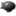

|
Навигация:  Главная О нашем издательстве Архив: Апрель 2020 |
Добро пожаловать на официальную страницу ИА "16 троллейбус". Мы пишем абсурдные, и не очень новости про город, ведь как известно - улыбка продлевает жизнь. Все новости являются выдумкой, и существуют только для того, чтоб поднять ваше настроение. При написании новостей мы вдохновляемся старыми СМИ, "Жёлтыми" газетами, и просто фейковыми новосятми, заполонившиеся все соц.сети. Не верьте нам, и вообще никому. Только пруфам. |